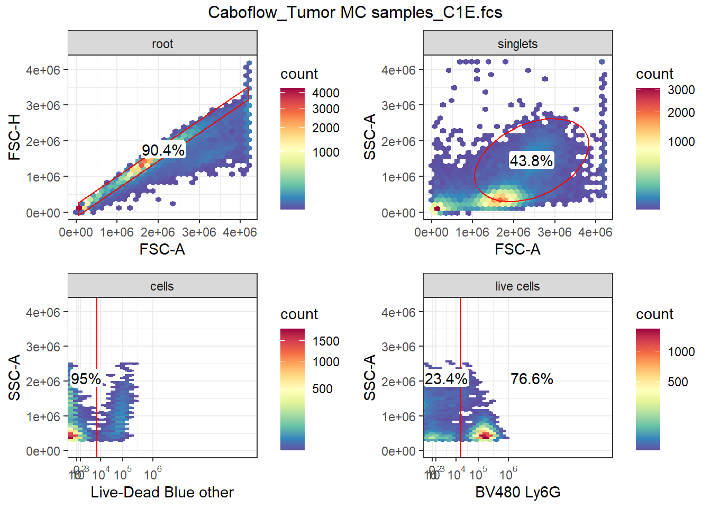
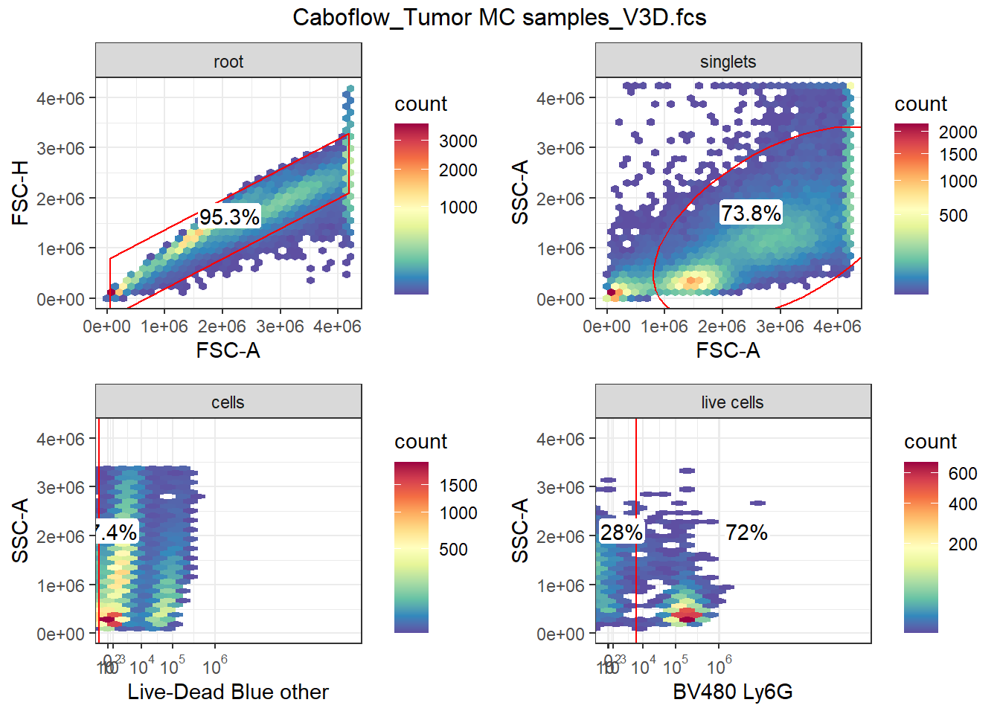

See Course tab for Course Materials, see YouTube tab for livestream recordings
Take home problems Week 8
Author
Carlos Cuño
Published
April 17, 2026
Problem 1
Using flowGate, go ahead and create your own series of gates for either our data or your own for any cell populations that might interest you. Once done, save the GatingSet, and then successfully reload it. Add another gate, but intentionally misdraw it. Then proceed to visualize, identify and correct it, before saving again.
We start by loading the libraries.
library(flowWorkspace)
As part of improvements to flowWorkspace, some behavior of
GatingSet objects has changed. For details, please read the section
titled "The cytoframe and cytoset classes" in the package vignette:
vignette("flowWorkspace-Introduction", "flowWorkspace")
library(ggplot2)library(ggcyto)
Loading required package: flowCore
Loading required package: ncdfFlow
Loading required package: BH
library(flowGate)library(openCyto)library(Luciernaga) #Will try to downsample files
I have loaded a couple of unmixed .fcs files from my data. First, I will try to downsample them. I start by importing them into a GatingSet object.
Next thing would be to subset live leukocytes (LiveDead Blue- CD45+). In order to use fluorescent parameters, we first need to transform the data
# ds.gs.backup <- ds.gs #For not having to redo gating while trying transformation arguments# save_gs(ds.gs.backup, file.path(ds.data.location, "Backup GS.gs"))ds.gs.backup <-load_gs(file.path(ds.data.location, "Backup GS.gs"))ds.gs <- ds.gs.backupchannels <-colnames(ds.gs)fluorophores <- channels[!stringr::str_detect(channels, "FSC|SSC|Time")]biexp <-flowjo_biexp_trans(channelRange=4096, maxValue=262144,pos=4.5, neg=0, widthBasis=-1000) biexp.list <-transformerList(fluorophores, biexp)transform(ds.gs, biexp.list)ggcyto(ds.gs[1], subset ="cells", aes(x ="Live-Dead Blue", y ="Alexa Fluor 700")) +geom_hex(bins =128)
Transformation seems to work fine, but some negative events (probably debris) actually alter the plot. I’ve made some research and setting axis limits in the ggcyto doesn’t work (because it always tries to fit every value). Removing those values should work, but we can also use manual ranges in the gating:
Go ahead and create your own openCyto gate template, extending to whatever cell target population of interest. Visualize the differences, and ensure that the gates are correctly applied for everyone. Set gate_constaint arguments as needed until everything is just right.
I start by opening the csv file (sorry for the csv2 format from Spanish OS :(, although it doesn’t make a difference for the fread function).
alias pop parent dims gating_method
<char> <char> <char> <char> <char>
1: singlets + root FSC-A, FSC-H singletGate
2: cells + singlets FSC-A, SSC-A flowClust
3: live cells - cells Live-Dead Blue mindensity
4: neutrophils + live cells Ly6G mindensity
5: not neutrophils - live cells Ly6G mindensity
gating_args collapseDataForGating groupBy preprocessing_method
<char> <lgcl> <lgcl> <lgcl>
1: FALSE NA NA
2: K=3, target=c(1.5e6, 5e6) FALSE NA NA
3: range=c(1e-4, 1e4) FALSE NA NA
4: FALSE NA NA
5: FALSE NA NA
preprocessing_args
<lgcl>
1: NA
2: NA
3: NA
4: NA
5: NA
Heads up I modified the parameters for the flowClust method in order to get all leukocytes (the small population with higher FSC-A and SSC-A values are tumor-associated macrophages). Second step is creating the gating template.
gate.template <-gatingTemplate(template)
Adding population:singlets
Adding population:cells
Adding population:live cells
Adding population:neutrophils
Adding population:not neutrophils
Now we import the .fcs files from the first exercise and perform the same transformation.
Lastly, I apply the gate and I plot the gates from both samples
gt_gating(gate.template, ds.gs)
Gating for 'singlets'
done!
done.
Gating for 'cells'
The prior specification has no effect when usePrior=no
Using the serial version of flowClust
The prior specification has no effect when usePrior=no
Using the serial version of flowClust
done!
done.
Gating for 'live cells'
Warning: In density.default(x, adjust = adjust, ...) :
extra argument 'range' will be disregarded
Warning: In density.default(x, adjust = adjust, ...) :
extra argument 'range' will be disregarded
Warning: In density.default(x, adjust = adjust, ...) :
extra argument 'range' will be disregarded
Warning: In density.default(x, adjust = adjust, ...) :
extra argument 'range' will be disregarded
done!
done.
Gating for 'not neutrophils'
done!
done.
Gating for 'neutrophils'
done!
done.
finished.
autoplot(ds.gs[[1]]) +theme_bw()
Warning: Using the `size` aesthetic with geom_segment was deprecated in ggplot2 3.4.0.
ℹ Please use the `linewidth` aesthetic instead.
ℹ The deprecated feature was likely used in the ggcyto package.
Please report the issue to the authors.

autoplot(ds.gs[[2]]) +theme_bw()

As I mentioned in the discussion forum, I get different gates in each sample, and particularly gating live cells is being a little bit problematic.
Problem 3
Re-run your openCyto template, but then add a few additional flowGate on to to extend it further. Save the gating set, close out of positron, and successfully reload.